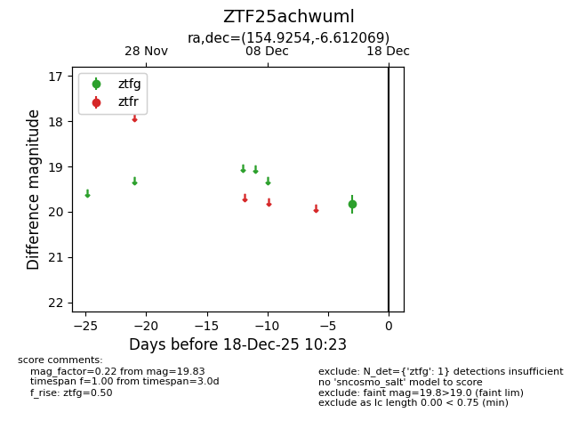
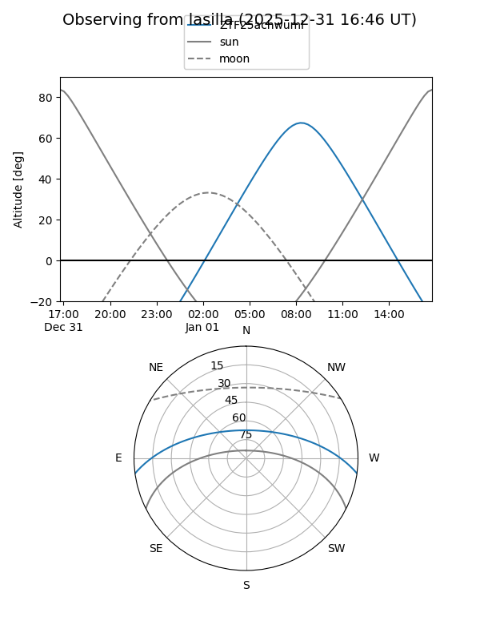
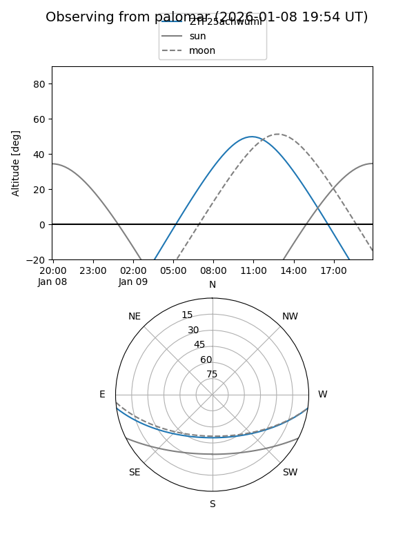
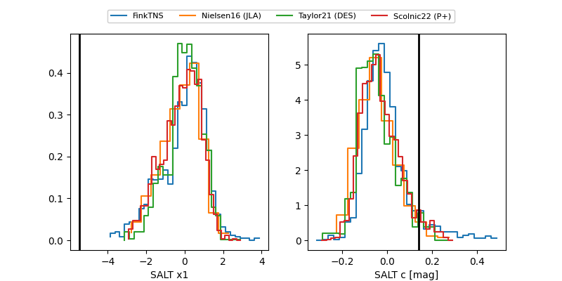

ZTF25achwuml
Target ZTF25achwuml at 2025-12-20 13:34
Aliases and brokers:
FINK: fink-portal.org/ZTF25achwuml
Lasair: lasair-ztf.lsst.ac.uk/objects/ZTF25achwuml
ALeRCE: alerce.online/object/ZTF25achwuml
alt names
ZTF25achwuml (ztf,fink_ztf)
Coordinates:
equatorial (ra, dec) = 154.9254,-6.61207
equatorial (HMS+DMS) = 10:19:42.10,-06:36:43.45
galactic (l, b) = (249.9056,+40.14891)
Flags:
Photometry:
last ztfg=19.73
2 ztfg detections
Lightcurve

Visibility


Additional plots
